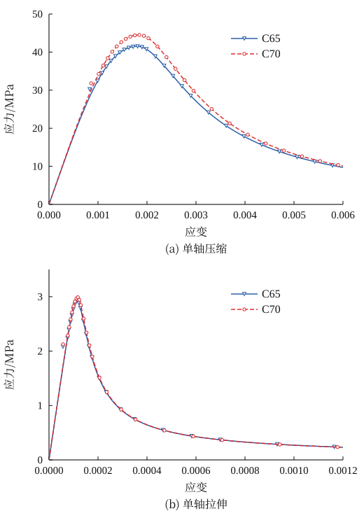
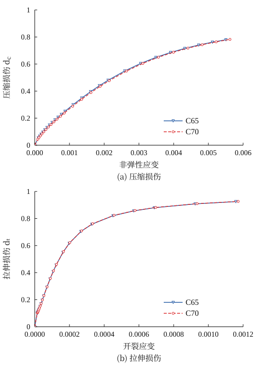

第二章 参考文献与本文图件对照
张田等（2024），《计算力学学报》，41(6):1130–1137；Tan等（2025），Engineering Structures, 336:120443。
1 单轴本构及损伤
本文


左为循环试验验证；右为规范包络与输入点，不等同于试验验证。
2 单轴试件与边界条件
原文采用150 mm立方体；本文拟采用100 mm试件，须进行尺寸与网格效应复核。
3 断裂能与网格敏感性
本文
| 材料 | 25 mm | 50 mm | 100 mm |
|---|---|---|---|
| C65 | 21.74 | 43.48 | 86.95 |
| C70 | 22.05 | 44.10 | 88.21 |
现有开裂应变输入表的截断积分乘单元长度，单位 J/m²。
仅为输入积分，不能替代断裂能标定和网格收敛曲线。
4 循环加载
未取得循环应力—应变输出。
5 钢筋本构
文献修正钢筋模型不直接移植。
6 有限元模型及验证


右侧为独立局部方法试件，非混凝土水平环缝或试验复现。
7 预压与接缝承载

库仑摩擦解析上限不作为计算承载力结果。
8 CDP计算方法
本研究采用规范包络及能量等效损伤；与张田等断裂能正则化方法不同。
9 构件级验证
原文荷载—位移曲线不作为本文结果。